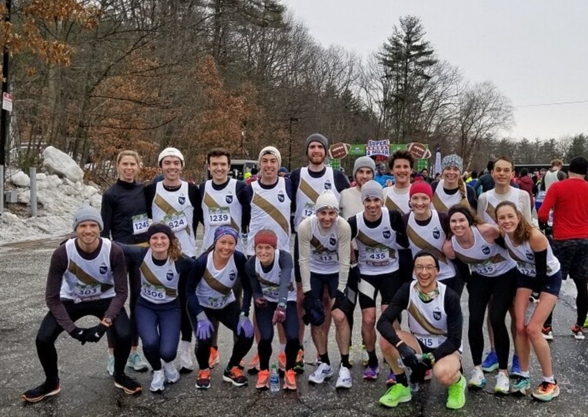
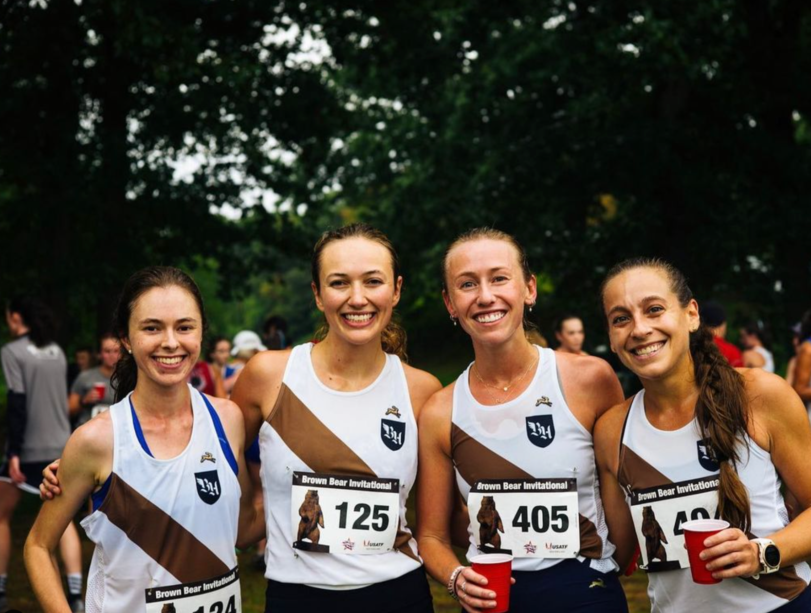

The Tracksmith Boston Hares
 Mission
The Boston Hares are Tracksmith’s Boston racing team. We welcome runners of all abilities, solely asking team members to share in the team’s competitive spirit as we chase personal bests and team championships. We'd love to train and compete with you.
Are There Performance Standards?
We do not have time standards to join the team. The primary expectation of the team is that your goal is to grow as a runner. We encourage members to regularly seek out opportunities to compete, race, and improve while representing Tracksmith in uniform. Improvement comes in a variety of forms other than running faster, such as trying new distances, attempting to score in a new age division, or challenging yourself following time away from the sport.
If you are interested in elite athlete support, click here to learn more about our Athlete Support Program.
Are there participation requirements?
There are no participation requirements. Members of our team have careers, families, and school to attend, among many other commitments. We are proud of how well-rounded our team is and we believe flexibility in training and racing is an asset to our members. While we encourage participation in team events and races, we do not require attendance, and encourage members to attend as much as fits their schedule.
What is the difference between Run Club, Hare AC, the Amateur Support Program, and the Boston Hares?
- Tracksmith prides itself on offering a wide range of high-quality community programming for runners of all abilities, backgrounds, and commitment levels.
- "Run Club" refers to the regular run club programming that Tracksmith offers at the Trackhouse on 285 Newbury St. in Boston. These events are open to all at no cost. If you would like to learn more about any of the community offerings, feel free to contact community@tracksmith.com.
- Tracksmith also owns the Hare AC program, a “global community of passionate, performance-minded runners with exclusive access to most sought-after experiences, products and offers.” The Boston Hares’ club name used to be “Tracksmith Hare AC” but we have changed our name to avoid confusion with the concierge program which is a global brand initiative that Boston Hares members are also welcome to join (or not join).
- The Amateur Support Program is a nationwide support program for runners pursuing elite goals in the sport of track and field. Members of the program are typically pursuing qualification for U.S. championships or Olympic Trials.
- The Boston Hares are the Boston-based racing team sponsored by Tracksmith. That’s us!